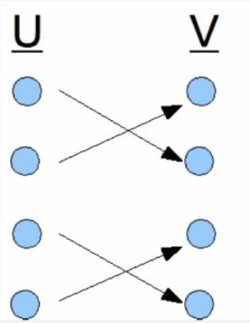
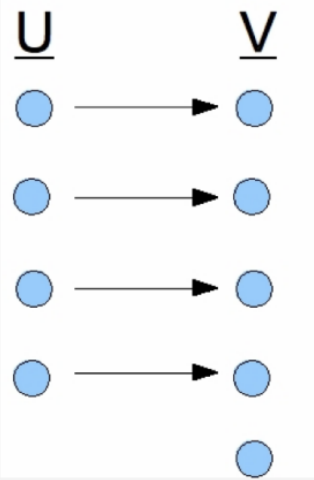
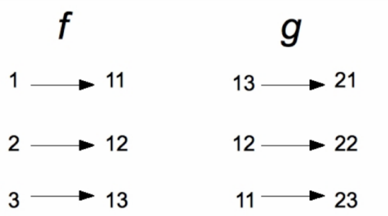

def increments(L): return [x+1 for x in L]
print(increments([1, 5, 7]))[2, 6, 8]\(f\) is a function whose domain is the set \(A\) and codomain is the set \(B\). AKA: \(f\) is a function that maps \(A\) to \(B\).
\(h \circ (g \circ f) = (h \circ g) \circ f\)
The probability of an event is the sum of probabilities.
The output will also have a uniform distribution. This is because an invertible function is a one-to-one mapping, so it preserves the uniformity of the distribution. In other words, every possible output value will have the same probability of being produced, as every possible input value has the same probability of being chosen.
increments(L)
input: list L of numbers
output: list of numbers in which the ith element is one plus the ith element Example: increments([1, 5, 7]) should return [2, 6, 8]
def increments(L): return [x+1 for x in L]
print(increments([1, 5, 7]))[2, 6, 8]cubes(L)
input: list L of numbers
output: list of numbers in which the ith element is the cube of the ith element of L.
Example: given [1, 2, 3] return [1, 8, 27]
def cubes(L): return[x**3 for x in L]
print(cubes([1, 2, 3]))[1, 8, 27]tuple_sum(A, B)
input: lists A and B of the same length, where each element in each list is a pair (x, y) of numbers
output: list of pairs (x, y) in which the first element of the ith pair is the sum of the first element of the ith pair in A and the first element of the ith pair in B
Example: given lists [(1, 2), (10, 20)] and [(3, 4), (30, 40)], return [(4, 6), (40, 60)]
def tuple_sum(A, B): return [(x[0]+y[0], x[1]+y[1]) for x, y in zip(A, B)]
A= [(1, 2), (10, 20)]
B = [(3, 4), (30, 40)]
print(tuple_sum(A, B))[(4, 6), (40, 60)]inv_dict(d)
input: dictionary d representing an invertible function f
output: dictionary representing the inverse of f, the returned dictionary’s keys are the value of d and its values are the keys of d
Example: given an English-French dictionary:
{‘thank you’ : ‘merci’, ‘goodbye’ : ‘au revoir’}
return a French-English dictionary:
{‘merci’ : ‘thank you’, ‘au revoir’ : ‘goodbye’}
def inv_dict(d): return {v: k for k, v in d.items()}
d = {'thank you' : 'merci', 'goodbye' : 'au revoir'}
print(inv_dict(d)){'merci': 'thank you', 'au revoir': 'goodbye'}First write a procedure row with the following spec:
input: integer p, integer n
output: n-element list such that element i is p+i
Example: given p = 10 and n = 4, return [10, 11, 12, 13]
Next, write a comprehension whose value is a 15-element list of 20-element lists such that the jth element of the ith list is i+j. You can use row(p, n) in your comprehension.
Finally, write the same comprehension but without using row(p, n). Hint: replace the call to row(p, n) with the comprehension that forms the body of row (p, n)
def row(p, n): return [p+i for i in range(n)]
print(row(10, 4))
print([row(i, 20) for i in range(15)])
print([[i+j for j in range(20)] for i in range(15)])[10, 11, 12, 13]
[[0, 1, 2, 3, 4, 5, 6, 7, 8, 9, 10, 11, 12, 13, 14, 15, 16, 17, 18, 19], [1, 2, 3, 4, 5, 6, 7, 8, 9, 10, 11, 12, 13, 14, 15, 16, 17, 18, 19, 20], [2, 3, 4, 5, 6, 7, 8, 9, 10, 11, 12, 13, 14, 15, 16, 17, 18, 19, 20, 21], [3, 4, 5, 6, 7, 8, 9, 10, 11, 12, 13, 14, 15, 16, 17, 18, 19, 20, 21, 22], [4, 5, 6, 7, 8, 9, 10, 11, 12, 13, 14, 15, 16, 17, 18, 19, 20, 21, 22, 23], [5, 6, 7, 8, 9, 10, 11, 12, 13, 14, 15, 16, 17, 18, 19, 20, 21, 22, 23, 24], [6, 7, 8, 9, 10, 11, 12, 13, 14, 15, 16, 17, 18, 19, 20, 21, 22, 23, 24, 25], [7, 8, 9, 10, 11, 12, 13, 14, 15, 16, 17, 18, 19, 20, 21, 22, 23, 24, 25, 26], [8, 9, 10, 11, 12, 13, 14, 15, 16, 17, 18, 19, 20, 21, 22, 23, 24, 25, 26, 27], [9, 10, 11, 12, 13, 14, 15, 16, 17, 18, 19, 20, 21, 22, 23, 24, 25, 26, 27, 28], [10, 11, 12, 13, 14, 15, 16, 17, 18, 19, 20, 21, 22, 23, 24, 25, 26, 27, 28, 29], [11, 12, 13, 14, 15, 16, 17, 18, 19, 20, 21, 22, 23, 24, 25, 26, 27, 28, 29, 30], [12, 13, 14, 15, 16, 17, 18, 19, 20, 21, 22, 23, 24, 25, 26, 27, 28, 29, 30, 31], [13, 14, 15, 16, 17, 18, 19, 20, 21, 22, 23, 24, 25, 26, 27, 28, 29, 30, 31, 32], [14, 15, 16, 17, 18, 19, 20, 21, 22, 23, 24, 25, 26, 27, 28, 29, 30, 31, 32, 33]]
[[0, 1, 2, 3, 4, 5, 6, 7, 8, 9, 10, 11, 12, 13, 14, 15, 16, 17, 18, 19], [1, 2, 3, 4, 5, 6, 7, 8, 9, 10, 11, 12, 13, 14, 15, 16, 17, 18, 19, 20], [2, 3, 4, 5, 6, 7, 8, 9, 10, 11, 12, 13, 14, 15, 16, 17, 18, 19, 20, 21], [3, 4, 5, 6, 7, 8, 9, 10, 11, 12, 13, 14, 15, 16, 17, 18, 19, 20, 21, 22], [4, 5, 6, 7, 8, 9, 10, 11, 12, 13, 14, 15, 16, 17, 18, 19, 20, 21, 22, 23], [5, 6, 7, 8, 9, 10, 11, 12, 13, 14, 15, 16, 17, 18, 19, 20, 21, 22, 23, 24], [6, 7, 8, 9, 10, 11, 12, 13, 14, 15, 16, 17, 18, 19, 20, 21, 22, 23, 24, 25], [7, 8, 9, 10, 11, 12, 13, 14, 15, 16, 17, 18, 19, 20, 21, 22, 23, 24, 25, 26], [8, 9, 10, 11, 12, 13, 14, 15, 16, 17, 18, 19, 20, 21, 22, 23, 24, 25, 26, 27], [9, 10, 11, 12, 13, 14, 15, 16, 17, 18, 19, 20, 21, 22, 23, 24, 25, 26, 27, 28], [10, 11, 12, 13, 14, 15, 16, 17, 18, 19, 20, 21, 22, 23, 24, 25, 26, 27, 28, 29], [11, 12, 13, 14, 15, 16, 17, 18, 19, 20, 21, 22, 23, 24, 25, 26, 27, 28, 29, 30], [12, 13, 14, 15, 16, 17, 18, 19, 20, 21, 22, 23, 24, 25, 26, 27, 28, 29, 30, 31], [13, 14, 15, 16, 17, 18, 19, 20, 21, 22, 23, 24, 25, 26, 27, 28, 29, 30, 31, 32], [14, 15, 16, 17, 18, 19, 20, 21, 22, 23, 24, 25, 26, 27, 28, 29, 30, 31, 32, 33]]Is the following function invertible? If yes, explain why. If not, can you change the domain and/or codomain of the function to make it invertible? Provide the drawing.

The function is invertible because for every \(x, y \in U, f(x) = f(y)\) and for every \(z \in V\), there exists \(x \in U\) such that \(f(x) = z\).
Is the following function invertible? If yes, explain why. If not, can you change the domain and/or codomain of the function to make it invertible? Provide the drawing.

The function is not invertible. It is impossible to make this function invertible as it currently is now, as \(|V| \ne |U|\), but if you remove the last element of \(V\), then it is invertible.
Let \(f : \mathbf{R} \rightarrow \mathbf{R}\) where \(f(x) = abs(x)\) . Is there a choice of domain and codomain for the function \(g(x)\) with the rule \(g(x) = \sqrt{x}\) such that \(g \circ f\) is defined? If so, specify it. If not, explain why not. Could you change domain and/or codomain of \(f\) or \(g\) so that \(g \circ f\) will be defined? The choice of domain and codomain for \(g(x)\) where \(g \circ f\) is defined is \(\mathbf{R}\).
Consider functions f and g in the following figure:

Is \(f \circ g\) defined? If so, draw it, otherwise explain why not.
\(f \circ g\) is defined as follows:
graph LR 1 --> 23 2 --> 22 3 --> 21
A function f(x) = x+1 with domain {1, 2, 3, 5, 6} and codomain {2, 3, 4, 6, 7} has the following probability on its domain: Pr(1) = 0.5, Pr(2) = 0.2, and Pr(3) = Pr(5) = Pr(6) = 0.1. What is the probability of getting an even number as an output of f(x)? An odd number? \(\mathrm{Pr}("even") = \mathrm{Pr}(1) + \mathrm{Pr}(3) + \mathrm{Pr}(5) = 0.5+0.1+0.1 = 0.7\)
A function g(x) = x mod 3 with domain {1, 2, 3, 4, 5, 6, 7} and codomain {0, 1, 2} has the following probability function on its domain: Pr(1) = Pr(2) = Pr(3) = 0.2 and Pr(4) = Pr(5) = Pr(6) = Pr(7) = 0.1. What is the probability of getting 1 as an output of g(x)? What is the probability of getting 0 or 2? \(\mathrm{Pr}(\text{"1"}) = \mathrm{Pr}(1) + \mathrm{Pr}(4) + \mathrm{Pr}(7) = 0.2 + 0.1 + 0.1 = 0.4\)
\(\mathrm{Pr}(\text{"0 or 2"}) = \mathrm{Pr}(2) + \mathrm{Pr}(3)+\mathrm{Pr}+(5)+\mathrm{Pr}(6) = 0.2 + 0.2 + 0.1 + 0.1 = 0.6\)